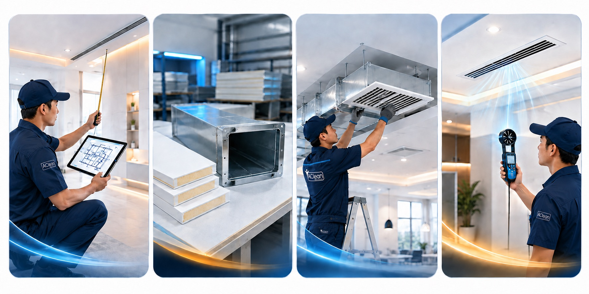

Dari desain layout, fabrikasi, hingga instalasi. Ducting AC PU Board — lebih ringan, insulasi lebih baik, anti jamur, tampilan plafon lebih bersih. Melayani residensial dan komersial di Tangerang Selatan.
Ducting menyembunyikan jalur udara di balik plafon, lalu menyalurkannya ke beberapa titik diffuser. Hasilnya lebih bersih secara visual dan lebih nyaman untuk ruang open-plan.
❄Indoor ACSumber udara dingin
→
▣Main ductSaluran utama
→
⑂Branch ductPembagian jalur
→
⌗Diffuser / grillePenyebar udara
→
✦Ruangan nyamanAliran lebih merata
Tanpa perencanaan
Udara tidak seimbang
Titik tertentu terasa lebih panas
Jalur dan unit terlihat mengganggu interior
Risiko embun jika insulasi kurang baik
Dengan AClean
Layout dirancang sejak awal
Posisi diffuser disesuaikan layout ruangan
PU Board ringan dengan insulasi lebih baik
Airflow diuji sebelum serah terima
Survei gratisKami bantu cek ketinggian plafon, jalur duct, kapasitas AC, dan jumlah titik diffuser.Jadwalkan survei →
Material Unggulan
Kenapa Pilih Ducting AC PU Board?
PU Board (Polyurethane Insulated Panel) adalah standar modern untuk ducting AC — menggantikan galvanis + glasswool konvensional dengan keunggulan di setiap aspek.
⚖️
Jauh Lebih Ringan
Beban plafon lebih aman dan proses instalasi lebih cepat dibanding ducting galvanis yang berat.
±15 kg/m² vs galvanis ±25 kg/m²
🌡️
Insulasi Termal Superior
Permukaan duct tidak berembun sehingga tidak ada tetesan air ke plafon atau furnitur.
Nilai R hingga 5.0
🦠
Anti Jamur & Bakteri
Permukaan padat dan tidak menyerap air — tidak ada tempat tumbuh bagi jamur, beda dengan glasswool yang lembab.
Material non-porous
✂️
Instalasi Lebih Cepat
PU Board lebih mudah dipotong dan disambung dengan presisi, mempercepat proses fabrikasi dan pemasangan.
40% lebih cepat dari galvanis
Perbandingan: PU Board vs Galvanis + Glasswool
Aspek
PU Board (AClean)
Galvanis + Glasswool
Berat
Ringan (±15 kg/m²)
Berat (±25 kg/m²)
Risiko embun / tetesan air
Tidak berembun
Berpotensi berembun
Jamur & bakteri
Anti jamur
Glasswool bisa jadi sarang jamur
Serat berbahaya terhirup
Tidak ada serat
Glasswool menghasilkan serat mikro
Kecepatan instalasi
Lebih cepat
Lebih lambat
Usia pakai
15–20 tahun
10–15 tahun
Proses Kerja
Dari Desain hingga Instalasi
4 tahap yang kami jalankan untuk setiap proyek ducting AC — mulai dari survei awal hingga serah terima dengan garansi.

Alur kerja AClean dari lokasi hingga serah terima
01Hari 1 · Survey
Survey & Design
Kami cek tinggi plafon, ukuran ruangan, kapasitas AC, jalur pipa, dan posisi diffuser. Anda menerima rekomendasi layout yang masuk akal untuk ruang dan budget.
Ukur & foto kondisi lokasi
Hitung kebutuhan BTU dan airflow
Rancang jalur ducting dan titik diffuser
02Build · Custom
Fabrikasi PU Board
Material dipotong dan dibentuk berdasarkan layout yang disetujui. Setiap sambungan diperhatikan agar jalur rapi dan kebocoran udara minimal.
PU Board sesuai kebutuhan proyek
Potongan dan sambungan presisi
Persiapan grille, diffuser, dan akses
03Install · Rapi
Instalasi & Koneksi
Tim memasang ducting di balik plafon, menghubungkan unit indoor, memasang diffuser, dan merapikan area kerja agar siap digunakan.
Jalur duct dan support terpasang aman
Koneksi ke unit indoor AC
Finishing plafon dan area kerja rapi
04Test · Handover
Balancing & Test Run
Sebelum serah terima, kami menguji aliran udara dan suhu di setiap titik agar distribusi dingin terasa lebih seimbang.
Uji airflow dan fungsi diffuser
Pengecekan suhu tiap zona
Serah terima + garansi instalasi 3 bulan
Paket Layanan
Pilih Sesuai Kebutuhan Anda
Setiap proyek ducting AC bersifat custom — harga bergantung pada luas ruangan, panjang jalur, dan jumlah titik grille. Survei dan estimasi GRATIS tanpa komitmen.
Residensial
Ducting AC Rumah
Untuk ruang tamu, ruang keluarga, atau area open-plan
Ducting AC PU Board adalah saluran udara (duct) yang terbuat dari Polyurethane Insulated Panel — material modern yang menggantikan galvanis + glasswool konvensional. PU Board lebih ringan, insulasi termalnya lebih baik sehingga tidak berembun, anti jamur, dan tidak menghasilkan serat yang bisa terhirup. Hasilnya: plafon lebih aman, udara lebih bersih, dan pendinginan lebih efisien.
AC split konvensional dipasang di dinding dengan unit indoor yang terlihat di setiap ruangan. Ducting AC menyembunyikan seluruh sistem di balik plafon — udara dingin didistribusikan melalui grille atau diffuser yang rata dengan plafon. Hasilnya: tampilan interior jauh lebih bersih, pendinginan lebih merata untuk ruangan luas atau open-plan, dan tidak ada noise dari unit indoor yang mengganggu.
Ya, ducting AC bisa diterapkan di rumah tipe 45 bahkan lebih kecil, terutama pada ruangan open-plan yang menggabungkan ruang tamu dan ruang makan. Syarat utamanya adalah ketinggian plafon minimal 2.6m dan adanya ruang void untuk jalur ducting. Survei gratis dari AClean akan menentukan kelayakan dan desain optimal untuk rumah Anda.
Untuk residensial 1–2 ruangan, pemasangan biasanya membutuhkan 1–2 hari kerja. Untuk proyek yang lebih besar seperti kantor atau ruko dengan multi-zona, bisa 3–7 hari tergantung kompleksitas layout. Waktu ini sudah termasuk fabrikasi PU Board, instalasi, dan test run akhir.
Biaya ducting AC sangat bervariasi tergantung luas ruangan, panjang jalur ducting, jumlah grille/diffuser, dan jenis unit AC yang digunakan. AClean memberikan survei dan estimasi biaya gratis tanpa komitmen apapun. Hubungi kami via WhatsApp dan ceritakan kebutuhan Anda — kami akan atur jadwal survei secepatnya.
AClean memberikan garansi instalasi 3 bulan. Jika ada kebocoran udara, grille bermasalah, atau ketidakmerataan pendinginan yang disebabkan oleh pekerjaan instalasi kami, kami perbaiki tanpa biaya tambahan. Material PU Board sendiri memiliki usia pakai 15–20 tahun dalam kondisi normal.
Siap Pasang Ducting AC?
Mulai dengan konsultasi dan survei GRATIS. Ceritakan kebutuhan Anda — kami rancang solusi terbaik untuk ruangan Anda.